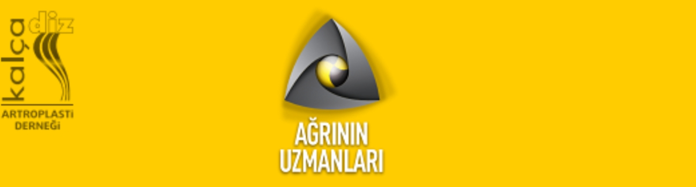

Sevgili Meslektaşlarım,
Antik çağlardan günümüze dek tıp ve hekimlerin en önemli amaçlarından birisi “ağrıyı kontrol etmek” olmuştur. Hipokrat, “Divinum est opus sedare dolorem” diyerek ağrıyı durdurmanın ilahi bir sanat olduğunu vurgulamıştır. Kas iskelet sisteminin acil, akut ve kronik ağrıları, güncel tıp uğraşılarının başında gelmektedir.
Ortopedi ve Travmatoloji, Fizik Tedavi ve Rehabilitasyon, Acil Tıp Hekimleri olarak disiplinler arası ağrı yönetim ve tedavisini tartışmak, karşılıklı bilgi ve deneyim paylaşımında bulunmak amacı ile “Ağrının Uzmanları 2022” toplantısında bir araya gelmeye karar verdik.
Kalça Diz Artroplasti Derneği (KADAD) olarak 27-29 Mayıs 2022 tarihleri arasında Kıbrıs Girne, Kaya Artemis Otel’de düzenleyeceğimiz toplantıya katılımlarınız bizleri mutlu edecektir.
En içten saygı ve sevgilerimizle.
Prof. Dr. E. Ertuğrul Şener
Kalça Diz Artroplasti Derneği Başkanı
